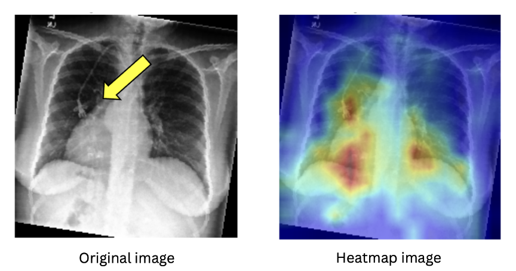
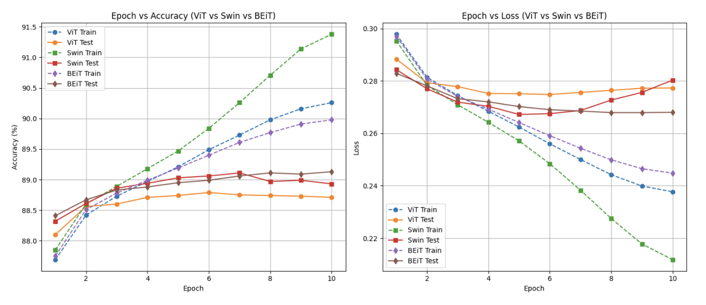
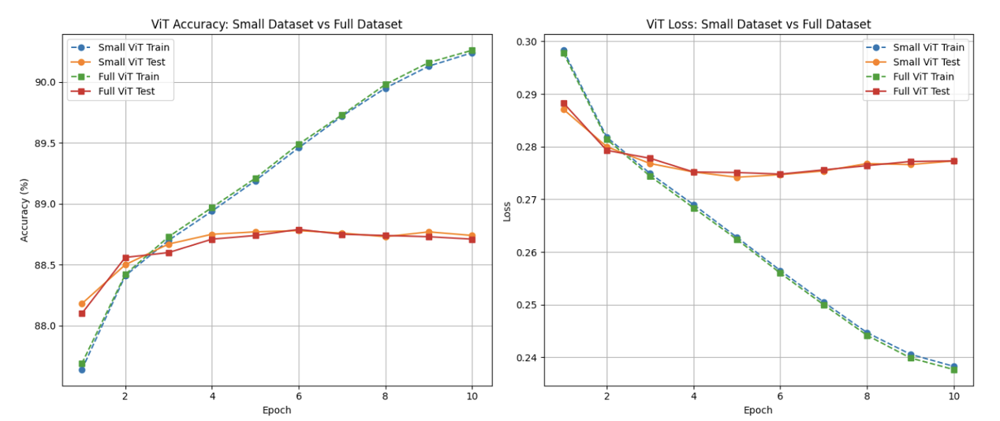
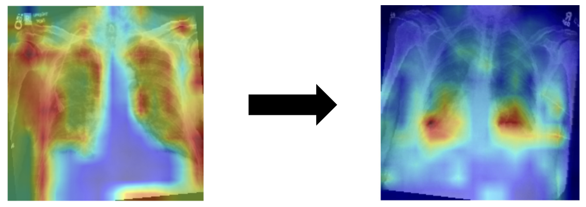

Abstract
We utilized the CheXpert dataset, a large-scale chest X-ray dataset, to diagnose chest conditions based on 14 labels and to localize pathological regions using heatmaps. To achieve this, we applied three vision transformer models—ViT, BEiT, and Swin. Initial experiments conducted on a test subset showed that the ViT Transformer model achieved the highest accuracy. Based on this result, we employed the ViT model on the full dataset to further improve diagnostic performance and enhance the precision of heatmap-based localization.
Dataset
We used the CheXpert-v1.0-small dataset, a downsized version of the original CheXpert dataset. It contains 224,316 chest radiographs from 65,240 patients, labeled with 14 clinical observations. The labels were generated by an automated labeling system capable of detecting and classifying findings, including cases with inherent uncertainty. A validation set of 200 studies was manually annotated by three board-certified radiologists to ensure reliability.
Experiment (Three Vision Transformers)
The Vision Transformer (ViT) applies the standard Transformer architecture directly to image patches, treating them as sequences similar to words in natural language. It splits the input image into fixed-size patches and processes them with self-attention mechanisms. ViT is known for its simplicity and scalability, performing well with large datasets but requiring significant data and compute resources to outperform CNN-based models.
BEiT builds upon ViT by introducing a pretraining strategy similar to BERT in NLP. It treats image patches as discrete visual tokens and learns bidirectional representations using a masked image modeling objective. This enables the model to better capture contextual relationships within the image, significantly improving performance in downstream tasks, especially when labeled data is limited.
The Swin Transformer introduces a hierarchical architecture that processes images through non-overlapping local windows with shifted configurations across layers. This design enables both local and global representation learning while maintaining computational efficiency. Its ability to model long-range dependencies and multi-scale features makes it particularly effective for dense prediction tasks such as detection and segmentation.

Figure 1 : This slide presents a comparative evaluation of three transformer-based architectures: Vision Transformer (ViT), Swin Transformer, and BEiT Transformer. Their performance was measured across 10 training epochs using both accuracy and loss metrics on training and test datasets. The accuracy plot on the left demonstrates that although the Swin Transformer achieves the highest accuracy during training, the BEiT Transformer consistently outperforms the others on the test set. This suggests that BEiT has superior generalization capabilities to unseen data. Correspondingly, the loss plot on the right reinforces this observation. The BEiT Transformer maintains the lowest test loss throughout all epochs, indicating its effectiveness in minimizing prediction error on novel inputs. In contrast, both ViT and Swin exhibit either increasing or plateauing test loss trends, which may be indicative of overfitting. Overall, among the evaluated models, the BEiT Transformer demonstrates the most favorable trade-off between training performance and generalization, establishing it as the most robust architecture in this comparison.

Figure 2 : This slide presents a performance comparison of the Vision Transformer (ViT) model trained on the full CheXpert dataset versus its downsampled counterpart. As illustrated in the graphs, both accuracy and loss metrics remain nearly identical across training epochs. This outcome suggests that the ViT model maintains comparable performance even when trained on a reduced dataset, indicating a degree of robustness. Such results highlight the potential for significant computational efficiency without compromising diagnostic effectiveness.

Figure 3 : The CLS token, which is trained to aggregate global information from the entire image, can be used to generate 2D heatmaps by visualizing the attention scores assigned to each patch. Figure 3 illustrates how the attention maps evolve as the model improves: the earlier model fails to focus accurately on the lesion, while the updated model correctly identifies disease-relevant regions.


Figure 1 : This slide presents a comparative evaluation of three transformer-based architectures: Vision Transformer (ViT), Swin Transformer, and BEiT Transformer. Their performance was measured across 10 training epochs using both accuracy and loss metrics on training and test datasets. The accuracy plot on the left demonstrates that although the Swin Transformer achieves the highest accuracy during training, the BEiT Transformer consistently outperforms the others on the test set. This suggests that BEiT has superior generalization capabilities to unseen data. Correspondingly, the loss plot on the right reinforces this observation. The BEiT Transformer maintains the lowest test loss throughout all epochs, indicating its effectiveness in minimizing prediction error on novel inputs. In contrast, both ViT and Swin exhibit either increasing or plateauing test loss trends, which may be indicative of overfitting. Overall, among the evaluated models, the BEiT Transformer demonstrates the most favorable trade-off between training performance and generalization, establishing it as the most robust architecture in this comparison.
Figure 2 : This slide presents a performance comparison of the Vision Transformer (ViT) model trained on the full CheXpert dataset versus its downsampled counterpart. As illustrated in the graphs, both accuracy and loss metrics remain nearly identical across training epochs. This outcome suggests that the ViT model maintains comparable performance even when trained on a reduced dataset, indicating a degree of robustness. Such results highlight the potential for significant computational efficiency without compromising diagnostic effectiveness.
Figure 3 : The CLS token, which is trained to aggregate global information from the entire image, can be used to generate 2D heatmaps by visualizing the attention scores assigned to each patch. Figure 3 illustrates how the attention maps evolve as the model improves: the earlier model fails to focus accurately on the lesion, while the updated model correctly identifies disease-relevant regions.